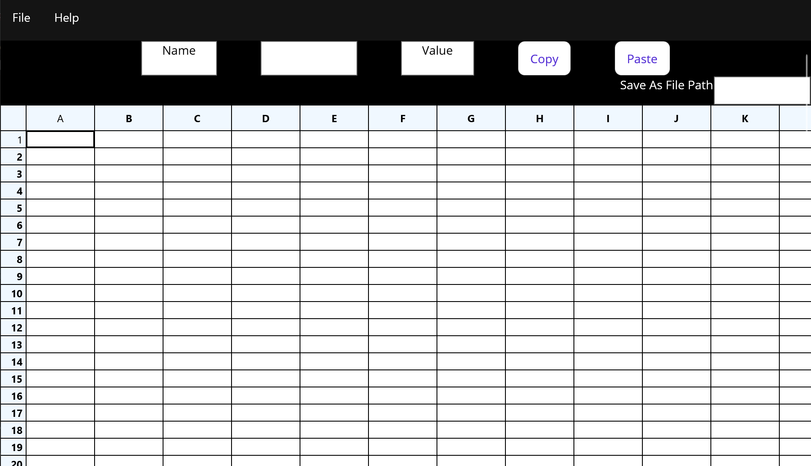
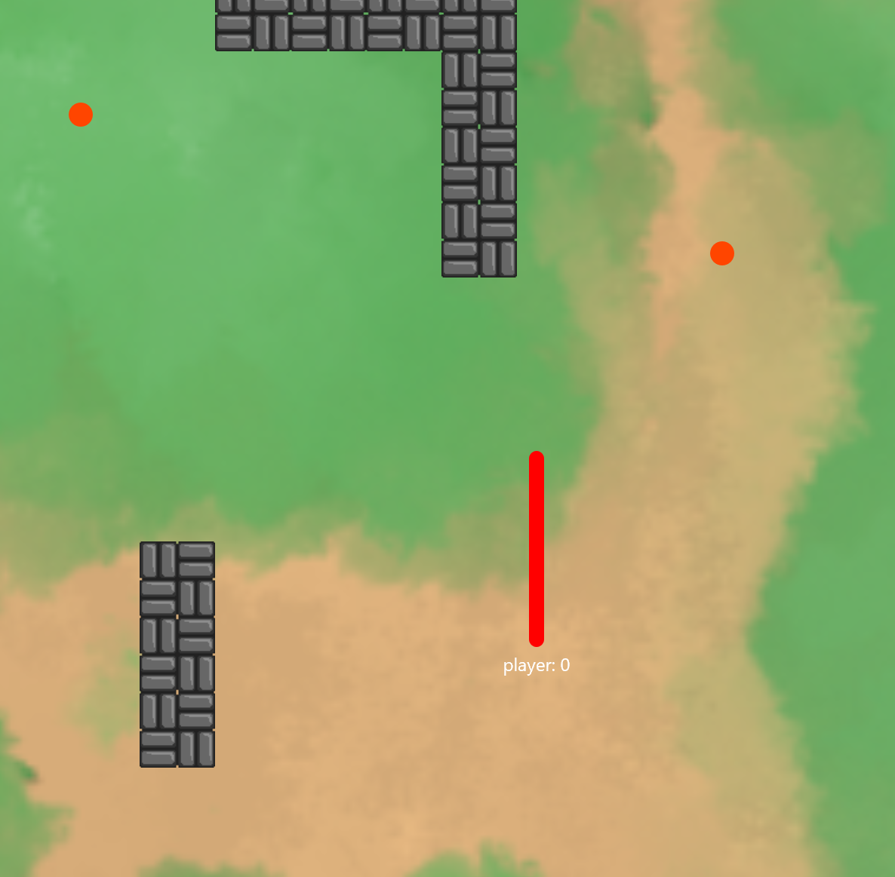
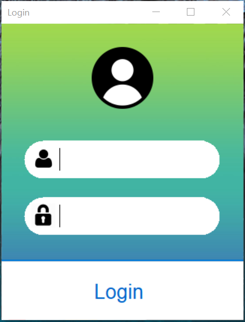

About Me
Mission Statement:
- Highly motivated and detail-oriented Computer Science student in the University of Utah's Honors College, with a passion for software engineering and math, and a strong foundation in problem-solving and critical thinking
Education:
- 2nd Year @ University of Utah
- Program: Honors BS Computer Science / Minor Mathematics
Goals:
- Summer Internship
- Enhance Portfolio
- Highly motivated and detail-oriented Computer Science student in the University of Utah's Honors College, with a passion for software engineering and math, and a strong foundation in problem-solving and critical thinking
Education:
- 2nd Year @ University of Utah
- Program: Honors BS Computer Science / Minor Mathematics
Goals:
- Summer Internship
- Enhance Portfolio
Highlighted Projects
-
Spreadsheet:
- A spreadsheet app for creating, opening, and saving files. Use cells and variables to perform calculations and store formulas. Includes copy, paste, and cell chaining.
What I Learned:
- Separation of Concerns, Infix expressions, and MAUI
Favorite Part of Project:
- Math behind the formula and infix
-
Snake Game:
- Fully multiplayer classic snake game. Uses a TCP socket handshake to establish connection between the server and the client. The server handles mechanics. Clients handle displaying.
What I Learned:
- Async programming, TCP, and Seperation of Concerns
Favorite Part of Project:
- Introduction to sockets
-
Website:
- Personal website used to showcase my programming projects and learn how to code HTML, CSS, and JS. Tried to implement a couple JS animation scripts.
What I Learned:
- HTML, CSS, JS
Favorite Part of Project:
- Building the website from the ground up and learning website development.
-
Learning Menu:
- Learning Menu/Course Selector application for teachers and students to use in school. Teachers upload courses and clubs, and students make selections from those courses.
What I Learned:
- AGILE development and C# Windows Forms
Favorite Part of Project:
- First time participating in a coding competition. Recieved 1st place at the state level.